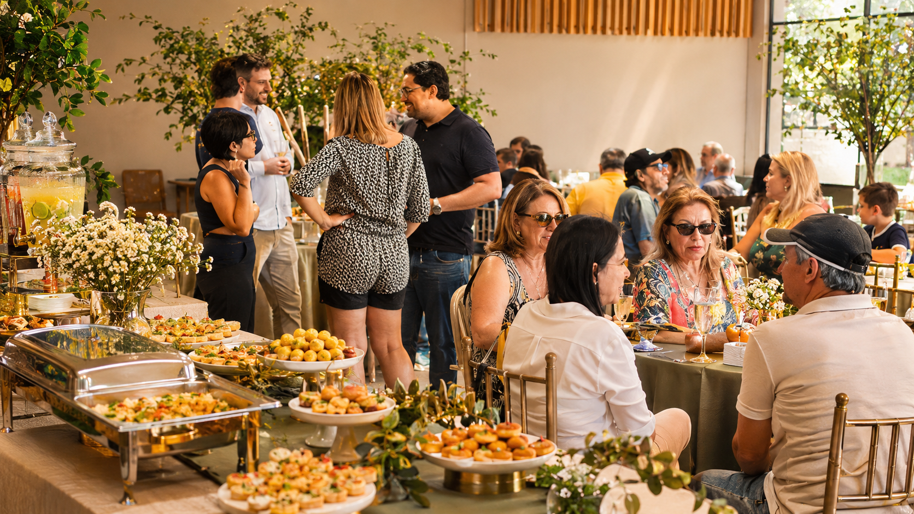

Festas infantis
Uma festa gostosa para crianças e adultos.
Barracas, salgadinhos, doces, bolos e opções que fazem parte das comemorações das famílias.
Planejar uma festa infantilBuffet no local do seu evento
Festas infantis e eventos corporativos bem servidos. Levamos sabor, equipe e estrutura para você aproveitar cada momento.


Para empresas
De coffee breaks e convenções às confraternizações de fim de ano, cuidamos do buffet para que sua equipe aproveite cada encontro.
Qual é a ocasião?
Do aniversário em família ao evento corporativo, montamos uma proposta alinhada ao espaço, ao número de convidados e ao cardápio.
Barracas, salgadinhos, doces, bolos e opções que fazem parte das comemorações das famílias.
Planejar uma festa infantil
Atendimento no local, equipe experiente e organização pensada para deixar você livre para aproveitar.
Consultar disponibilidadeQuem somos
Atendemos celebrações de diferentes tamanhos no local escolhido por você. Nossa equipe ajuda a organizar o serviço e prepara uma proposta de acordo com o tipo de evento, a data, o local e o número de convidados.
O serviço inclui garçons e garçonetes. Materiais descartáveis para refrigerante e bolo podem ser incluídos quando contratados. O atendimento padrão dura quatro horas, com tolerância de 30 minutos; outros horários podem ser combinados.
Conte o que está planejandoGaleria Sabor de Mel
Veja alguns dos nossos pratos e momentos de celebração.
Quem já celebrou com a gente
“Adoro e super recomendo: excelente atendimento e um sabor incrível. Em outubro nos veremos!”
“O buffet superou todas as nossas expectativas. A comida era de alta qualidade, variada e servida de maneira impecável. Recebemos muitos elogios dos nossos colaboradores!”
“Contratei para o aniversário do meu filho de 10 anos, com o tema da Champions League. Ele e os amiguinhos adoraram tudo!”
Dúvidas frequentes
Algumas respostas para ajudar no planejamento. Para detalhes do seu evento, fale diretamente com a equipe.
Perguntar pelo WhatsAppTrabalhamos com produtos de qualidade e seguimos cuidados de higiene em todas as etapas. Nossa equipe personaliza cada evento e prepara na própria cozinha os itens que não encontra prontos com fornecedores.
Atendemos no local combinado e montamos uma proposta conforme a ocasião, o espaço, a data e o número de convidados. Alimentos, utensílios, equipamentos e apoio podem variar de acordo com o orçamento.
O serviço inclui garçons e garçonetes. Materiais descartáveis para refrigerante e bolo podem ser incluídos quando contratados. Confirme os itens da sua proposta com a equipe.
O atendimento padrão dura quatro horas, com tolerância de 30 minutos. Outros horários podem ser combinados na contratação.
Sim. Empresas que reservam a confraternização com antecedência podem consultar a condição de 10% de desconto. Fale com a equipe para confirmar as regras e a disponibilidade para a sua data.
Vamos conversar
Envie a data, o local e uma estimativa de convidados. A equipe prepara um orçamento personalizado.
Chamar no WhatsApp